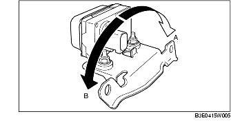
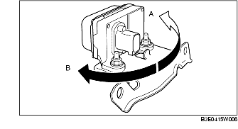

COMBINED SENSOR INSPECTION
B3E041543770W02
1. Turn the ignition switch off.
2. Connect the WDS or equivalent to the DLC-2.
3. Select the following PIDs and inspect the lateral acceleration and yaw rate.
-
- LAT_ACCL (lateral acceleration)
-
- YAW_RATE (yaw rate)
-
(1) Lateral acceleration inspection
-
1) Verify the LAT_ACCL change when the combined sensor is tilted to the left and right.

-
• If there is any malfunction, replace the combined sensor.(See COMBINED SENSOR REMOVAL/INSTALLATION.)
-
Standard
-
When the sensor is tilted to the right (A):
-
LAT_ACCL changes positively.
-
When the sensor is tilted to the left (B):
-
LAT_ACCL changes negatively.
-
(2) Yaw rate inspection
-
1) Verify the YAW_RATE change when the combined sensor is rotated to the left and right.

-
• If there is any malfunction, replace the combined sensor. (See COMBINED SENSOR REMOVAL/INSTALLATION.)
-
Standard
-
When the sensor is rotated to the right (A):
-
YAW_RATE changes positively.
-
When the sensor is rotated to the left (B):
-
YAW_RATE changes negatively.